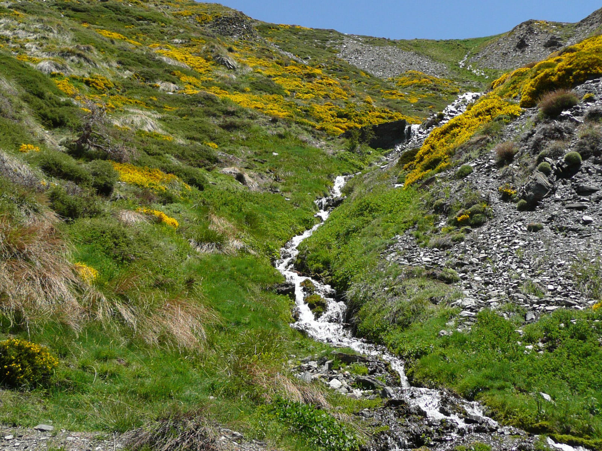
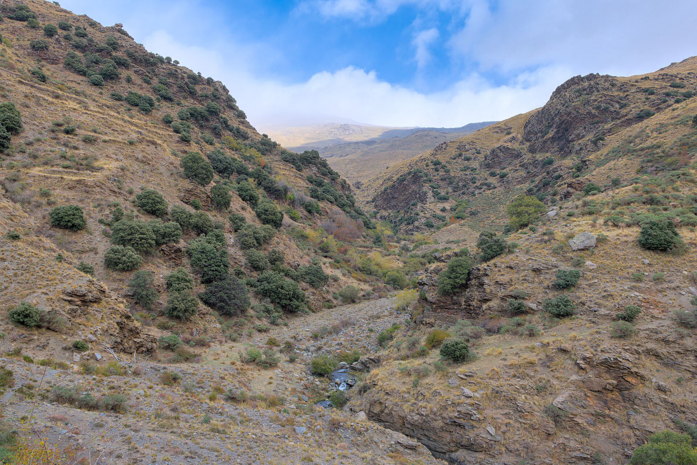

- Responsables
- Javier Martínez López (4.1.1 y 4.2) y Domingo Alcaraz Segura (4.1.2 y 4.3)
- Equipo
- Regino Jesús Zamora Rodríguez, José Manuel Álvarez Martínez, Salvador Arenas Castro, João Honrado, João Gonçalves, Bruno Marcos, Rohaifa Khaldi, Michael Sorochan Armstrong, Joana Llodrà Llabrés, Thedmer Postma, Beatriz Pérez Cazorla, Ingrid Tatiana Bello Rodríguez
- Objetivo específico
- 4
- Estado
- En curso
Con los gestores de cada parque elegimos casos de estudio para tres preguntas de gestión. Siempre que es posible, calibramos y validamos los índices de satélite con los datos de campo de los programas de seguimiento.
4.1 · Hábitats y especies
MonitorEO4Habitats · MonitorEO4Species · Directiva Hábitats, art. 17
Cartografiamos hábitats de interés comunitario con datos de campo clasificados según EUNIS y modelos de aprendizaje automático alimentados con teledetección de alta resolución. Separamos el área realmente ocupada del área potencial y evaluamos su estado de conservación con las condiciones de referencia de la Tarea 3. Para las especies, modelizamos la idoneidad del hábitat de especies emblemáticas a varias escalas y seguimos sus tendencias.

Avances
- Borreguiles (6230*). Los gestores y las sinergias con PRESINMED han priorizado este hábitat prioritario, muy vulnerable a la reducción de la nieve. Modelo Random Forest con 50 variables y 584 puntos verificados en 20 cuencas (AUC = 0,87 en validación cruzada por cuencas).
- Condición ecológica. Indicador basado en la distancia de Mahalanobis: tras cartografiar los borreguiles, identifica qué zonas tienen valores de las variables relevantes similares a los de las zonas bien conservadas.
- Verdad terreno. Aplicación de verificación con aprendizaje activo para suplir la escasez de datos de campo.
- Bases de datos de vegetación. Con el proyecto MOTIVATE se ha validado espacialmente el 57 % de las parcelas de ReSurveyEurope (manuscrito en revisión).
- Especies. Caso piloto seleccionado con los gestores.
- Pastos. Modelo de energía metabólica de los pastos de Andalucía, a petición de los gestores.
4.2 · Lagos de alta montaña
MonitorEO4Water · Directiva Marco del Agua
Relacionamos los muestreos de clorofila-a, materia orgánica disuelta coloreada y sólidos en suspensión con índices espectrales de satélite para seguir la calidad del agua de lagos pequeños e inaccesibles.

Avances
- Clorofila-a en 56 lagunas de Sierra Nevada muestreadas entre 2020 y 2023: comparación de correcciones atmosféricas y modelos con Sentinel-2; mapas cada unos cinco días, con R² por laguna de hasta 0,88 (Llodrà-Llabrés et al., 2026, Water Resources Research).
- Lagunas pequeñas. Solo 5 de las 56 lagunas se resuelven bien a 10 m, así que se incorpora PlanetScope: herramienta de delimitación de láminas de agua validada frente a digitalizaciones.
- Nieve y hielo. Tendencias de nieve en la lámina de agua, la orilla y la cuenca, y papel del hielo y la topografía en el calentamiento de las lagunas (manuscrito en revisión).
- Otros parques. Series de clorofila y sólidos en suspensión de Peñalara (Guadarrama), Aigüestortes y Picos de Europa para extender los modelos.
4.3 · Recuperación y restauración
MonitorEO4Restoration · Reglamento de Restauración de la Naturaleza
Con los gestores identificamos las perturbaciones y restauraciones de cada parque y comparamos la dinámica de las variables antes, durante y después con zonas similares no afectadas. Así medimos la severidad y la resiliencia del ecosistema.
- S95
- Severidad: diferencia entre el cuantil del 95 % justo después de la perturbación y el valor de referencia previo. Se relaciona con la resistencia del ecosistema.
- DIT
- Tiempo hasta la inflexión: cuándo la trayectoria cambia de dirección y empieza la recuperación.
- RRT
- Tiempo hasta volver al valor de referencia (resiliencia «ingenieril»).
- RET
- Tiempo hasta alcanzar un nuevo equilibrio (resiliencia ecológica).
Avances
- Aclareos. NDVI mensual de Landsat (1990–2025) en 80 parcelas de pinar del Observatorio de Cambio Global de Sierra Nevada con tratamientos del 0 al 100 %: los aclareos más intensos aumentan el NDVI y mitigan el decaimiento forestal. El caso se ha presentado a los gestores.
- Gestión posincendio. Retirar la madera quemada reduce la persistencia de la nieve (Cazorla et al., Ecological Applications, en revisión).
- Acequias. El NDVI aumenta tras restaurar acequias tradicionales, es mayor cerca del cauce y se mantiene en estiaje.
- Incendios. Diseño, con el proyecto FIRE-TRAN, de un trabajo de fin de máster sobre la recuperación tras el incendio de Los Guájares (Granada, 2022).

Próximos pasos
- Priorizar el caso piloto de especies (Tarea 4.1.2).
- Aplicación de evaluación del estado de conservación para usuarios sin programación.
- Extender los modelos de calidad del agua a los lagos de Guadarrama, Aigüestortes y Picos de Europa.
- Métricas de resiliencia tras incendios en Peneda-Gerês con el CIBIO-InBIO.